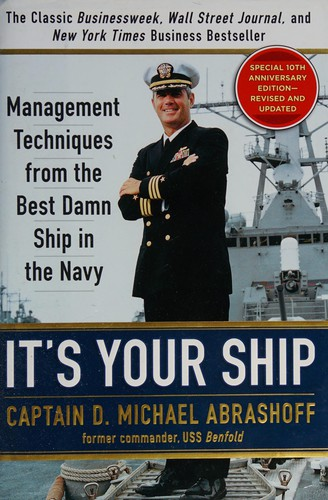

迈克尔·阿布拉肖夫（D. Michael Abrashoff）毕业于美国海军学院，曾参与起草1990年波斯湾海军防空计划，后担任巡洋舰"夏洛"号执行官，随舰部署至波斯湾执行联合国对伊拉克制裁任务。在接掌"本福尔德"号之前，他出任国防部长威廉·佩里（William J. Perry）的军事助理，这段经历让他近距离观察了五角大楼高层决策如何传导为一线行动——也让他深刻体会到，组织中最大的浪费往往不是资源不足，而是对人的忽视。
1997年6月，36岁的阿布拉肖夫成为太平洋舰队最年轻的舰长，接管了阿利·伯克级导弹驱逐舰"本福尔德"号（USS Benfold, DDG-65）。这艘造价10亿美元、配备宙斯盾作战系统的战舰在装备上堪称一流，管理上却近乎崩溃：士气低迷，事故频发，关键岗位的续签率仅为28%，在舰队绩效排名中垫底。水兵们离开的原因并非薪资或福利，而是觉得自己不被尊重、不被倾听。
阿布拉肖夫没有更换一个船员。他做的第一件事，是逐一与舰上310名水兵面谈，问每个人三个问题：你为什么参军？你最喜欢这艘船的什么？如果你是舰长，你会改变什么？这些对话让他意识到，问题不在于人，而在于管理方式本身。他开始系统性地下放权力，鼓励水兵对自己负责的领域提出改进方案并直接执行。当有人带着问题来找他时，他的回答往往是："这是你的船，你会怎么解决？"这句话后来成了全舰的信条。
变革的成效以硬数据呈现。二十个月后，"本福尔德"号的机械故障从1997年的75起降至1998年的24起；炮术成绩跃居太平洋舰队第一；关键岗位续签率从28%飙升至100%；水兵晋升率达到海军平均水平的两倍；运营费用削减了25%。"本福尔德"号荣获斯波坎杯（Spokane Trophy），这是太平洋舰队战备水平最高的舰艇才能获得的荣誉。从垫底到夺冠，用的是同一批人。
这本书出版于2002年，迅速登上《纽约时报》和《华尔街日报》畅销书榜，累计销量超过130万册。《哈佛商业评论》和《快公司》（Fast Company）先后报道了"本福尔德"号的转型故事，多所商学院将其列为组织变革的教学案例。阿布拉肖夫提炼的核心原则——以身作则、主动倾听、建立信任、充分授权、关注结果——表面上朴素，实质上指向一个根本命题：领导者的首要职责不是发号施令，而是创造一种环境，让每个人愿意并且能够释放自己的潜能。
值得一提的是，Glenair公司董事长兼CEO彼得·考夫曼（Peter Kaufman）曾将此书列为公司外部董事的必读书目，与《Plain Talk》和《The Carolina Way》并列。考夫曼评价道："三本书中，阿布拉肖夫拿到的牌最难打——在不更换一名船员的前提下，把太平洋舰队表现最差的军舰变成海军中最好的。"查理·芒格（Charlie Munger）曾称Glenair是他所知道的最优秀的三家运营公司之一，而考夫曼反复强调的正是：管理和文化之所以重要，是因为商业归根结底是关于人的事业。考夫曼还指出，尽管这三本书涉及截然不同的领域和情境，"其中阐述的领导力和文化原则却几乎完全一致"。
对于关注企业管理和长期价值的中国读者而言，这本书的启示在于：真正卓越的管理从来不是靠换人或加压，而是靠改变人与组织之间的关系。阿布拉肖夫证明了，当每个人感到被信任、被倾听、被赋予真正的责任时，同一群人可以创造出截然不同的结果。这个道理适用于军舰，也适用于任何一家企业。